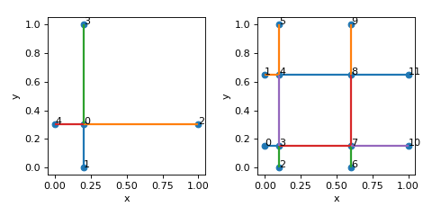
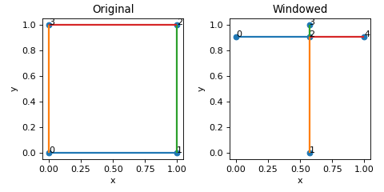

data package
The Lattice class
- class data.Lattice(*, name=None, lattice_constants=None, nodal_positions=None, edge_adjacency=None, edge_coordinates=None, fundamental_edge_adjacency=None, fundamental_tesselation_vecs=None, **kwargs)
Bases:
object- __init__(*, name=None, lattice_constants=None, nodal_positions=None, edge_adjacency=None, edge_coordinates=None, fundamental_edge_adjacency=None, fundamental_tesselation_vecs=None, **kwargs) None
Construct lattice unit cell.
Takes in keyword-only arguments.
Examples
- Three ways of initialisation:
by specifying node coordinates and edge adjacency
>>> import numpy as np >>> nodes = np.array([[0,0,0],[1,0,0],[0.5,1,0],[0.5,0.5,1]]) >>> edges = np.array([[0,1],[1,2],[0,2],[0,3],[1,3],[2,3]]) >>> lat = Lattice(nodal_positions=nodes, edge_adjacency=edges, >>> name='pyramid') >>> lat {'name': 'pyramid', 'num_nodes': 4, 'num_edges': 6}
by specifying edge coordinates
>>> edge_coords = np.array([ >>> [0,0,0,1,0,0], >>> [1,0,0,0.5,1,0], >>> [0.5,1,0,0,0,0], >>> [0,0,0,0.5,0.5,1], >>> [1,0,0,0.5,0.5,1], >>> [0.5,1,0,0.5,0.5,1] >>> ]) >>> lat = Lattice(edge_coordinates=edge_coords, name='pyramid') >>> lat {'name': 'pyramid', 'num_nodes': 4, 'num_edges': 6}
by specifying fundamental representation
>>> # simple cubic in fundamental representation >>> nodes = [[0.5,0.5,0.5]] >>> fundamental_edge_adjacency = [[0,0],[0,0],[0,0]] >>> tess_vecs = [[0,0,0,1,0,0],[0,0,0,0,1,0],[0,0,0,0,0,1]] >>> lat = Lattice( >>> nodal_positions=nodes, >>> fundamental_edge_adjacency=fundamental_edge_adjacency, >>> fundamental_tesselation_vecs=tess_vecs >>> ) >>> lat.crop_unit_cell() >>> lat {'num_nodes': 7, 'num_edges': 6}
Lattice can also be initialised by directly unpacking the catalogue dictionary
>>> from data import Lattice, Catalogue >>> cat = Catalogue.from_file('Unit_Cell_Catalog.txt', 1) >>> lat = Lattice(**cat.get_unit_cell(cat.names[0])) >>> lat {'name': 'cub_Z06.0_E1', 'num_nodes': 8, 'num_edges': 12}
- apply_nodal_imperfections(dr_mag: float, kind: str) Lattice
Displace inner nodes using the fundamental representation.
- Parameters:
dr_mag (float) – magnitude of perturbation
kind (str) – ‘sphere_surf’ or ‘sphere_solid’ or ‘gaussian’
- Returns:
modified lattice with nodal imperfections
- Return type:
Examples
>>> nodes = [[0.3,0.3,0.5],[0.7,0.3,0.5],[0.3,0.7,0.5],[0.7,0.7,0.5]] >>> fundamental_edge_adjacency=[[0,1],[1,3],[2,3],[0,2],[2,0],[3,1],[1,0],[3,2]] >>> tess_vecs = [[0,0,0,0,0,0],[0,0,0,0,0,0],[0,0,0,0,0,0],[0,0,0,0,0,0], >>> [0,0,0,0,1,0],[0,0,0,0,1,0],[0,0,0,1,0,0],[0,0,0,1,0,0]] >>> lat = Lattice( >>> nodal_positions=nodes, >>> fundamental_edge_adjacency=fundamental_edge_adjacency, >>> fundamental_tesselation_vecs=tess_vecs >>> ) >>> lat.crop_unit_cell() >>> lat_imp = lat.apply_nodal_imperfections(0.1, 'sphere_surf')
(Source code, png, hires.png, pdf)

- calculate_UC_volume() float
Calculate unit cell volume from internally-stored crystal data
Given internally-stored crystal data \(a,b,c,{\alpha},{\beta},{\gamma}\), calculate unit cell volume as
\[abc \sqrt{1 - \cos({\alpha})^2 - \cos(\beta)^2 - \cos(\gamma)^2 + 2\cos(\alpha)\cos(\beta)\cos(\gamma)}\]For more details see the supporting information of PNAS paper at https://www.pnas.org/doi/10.1073/pnas.2003504118
- calculate_edge_lengths(edge_representation: str = 'cropped', coords: str = 'reduced') ndarray[Any, dtype[ScalarType]]
Calculate edge lengths in a given representation
- Parameters:
edge_representation (str, optional) – Use edges cropped to fit within unit cell window (‘cropped’) or fundamental edge representation (‘fundamental’). Defaults to ‘cropped’.
coords (str, optional) – Use nodal coordinates in ‘reduced’ or ‘transformed’ coordinate system. Defaults to ‘reduced’.
- Raises:
ValueError – if input parameters are not from the allowed set
- Returns:
edge lengths of shape (num_edges,) if edge_representation`is ‘cropped’ or (num_fundamental_edges,) if `edge_representation is ‘fundamental’.
- Return type:
np.ndarray
- calculate_edge_radius(rel_dens: float, coords: str = 'transformed') float
Calculate uniform edge radii according to relative density.
\[r = \sqrt{\frac{\bar{\rho} \ V}{\pi L}}\]where \(\bar{\rho}\) is the relative density, \(V\) is volume of the unit cell, and \(L\) is sum of the edge lengths.
- Parameters:
rel_dens (float) – target relative density
coords (str, optional) – Use ‘transformed’ or ‘reduced’ coordinates. Defaults to ‘transformed’.
- Returns:
edge radius that gives the target relative density
- Return type:
float
- calculate_fundamental_representation() None
Calculate the fundamental representation of lattice.
The fundamental representation is based on inner nodes and tesselation vectors.
Examples
>>> nodes = [[0,0.5,0.5],[1,0.5,0.5],[0.5,0,0.5],[0.5,1,0.5],[0.5,0.5,0.5]] >>> edges = [[0,4],[1,4],[2,4],[3,4]] >>> lat = Lattice(nodal_positions=nodes, edge_adjacency=edges) >>> lat.calculate_fundamental_representation() >>> lat.node_types {'corner_nodes': set(), 'edge_nodes': set(), 'face_nodes': {0, 1, 2, 3}, 'inner_nodes': {4}} >>> lat.fundamental_edge_adjacency [[4 4] [4 4]] >>> lat.fundamental_tesselation_vecs [[0. 0. 0. 1. 0. 0.] [0. 0. 0. 0. 1. 0.]] >>> lat.num_fundamental_edges 2
(Source code, png, hires.png, pdf)
- We see that this lattice has one inner node (4), and two fundamental edges:
4 –> 4 + [1 0 0] (horizontal edge connecting node 4 to its tesselation by vector (1,0,0))
4 –> 4 + [0 1 0] (vertical edge connecting node 4 to its tesselation by vector (0,1,0))
- calculate_nodal_connectivity() ndarray[Any, dtype[int32]]
Calculate how many times nodes appear in the edge adjacency map.
- Returns:
connectivity of each node
- Return type:
array[int] (num_nodes,)
- calculate_node_distances(repr='reduced') Tuple[ndarray, ndarray]
Calculate distances between all pairs of nodes.
- Parameters:
repr – ‘reduced’ or ‘transformed’
- Returns:
array of distances indices [num_pairs, 2]: indices of nodes corresponding to distances
- Return type:
distances [num_pairs]
- calculate_node_types() Dict[str, Set]
Calculate types of nodes from reduced representation
- Returns:
- a dictionary with sets of
corner_nodes (3 d.o.f. lie on UC boundary)
edge_nodes (2 d.o.f. lie on UC boundary)
face_nodes (1 d.o.f. lies on UC boundary)
inner_nodes (no d.o.f lie on UC boundary)
- Return type:
Dict[str, Set]
- calculate_relative_density(coords: str = 'transformed') float
Calculate relative density of the lattice.
- Parameters:
coords (str, optional) – Use ‘transformed’ or ‘reduced’ coordinates. Defaults to ‘transformed’.
- Returns:
relative density of the lattice
- Return type:
float
- check_window_conditions() bool
Operate on reduced edge adjacency representation.
- Check that
minimum reduced node coordinate is 0 and maximum is UC_L (1)
the only node types are face nodes and inner nodes
the connectivity of these nodes is 1
periodic partners come in pairs
See also
calculate_node_types(),calculate_nodal_connectivity(),check_periodic_partners()
- collapse_nodes_onto_boundaries(tol=0.0001)
Collapse nodes which are close to boundaries onto the boundaries.
Operates on reduced nodal coordinates. All nodal coordinates which are very close to 0 or UC_L (within tolerance) will be replaced by 0 or UC_L, respectively.
- create_tesselated(nx: int, ny: int, nz: int) Lattice
Create periodic tesselation of the lattice
- Parameters:
nx (int) – number of times to repeat in x-direction
ny (int) – number of times to repeat in y-direction
nz (int) – number of times to repeat in z-direction
- Returns:
tesselated lattice
- Return type:
Examples
>>> nodes = [[0.2,0.3,0],[0.2,0,0],[1,0.3,0],[0.2,1,0],[0,0.3,0]] >>> edges = [[0,1],[0,2],[0,3],[0,4]] >>> lat = Lattice(nodal_positions=nodes, edge_adjacency=edges) >>> lt = lat.create_tesselated(2,2,1)
(Source code, png, hires.png, pdf)

- create_windowed(max_num_attempts: int = 10, min_edge_length: float = 0.005, return_attempts: bool = False) Lattice
Create a windowed representation of a lattice
- Returns:
a new lattice instance
- Return type:
Examples
>>> nodes = [[0,0,0],[1,0,0],[1,1,0],[0,1,0]] >>> edges = [[0,1],[1,2],[2,3],[3,0]] >>> lat = Lattice(nodal_positions=nodes, edge_adjacency=edges) >>> lat {'num_nodes': 4, 'num_edges': 4} >>> lat_w = lat.create_windowed() >>> lat_w {'num_nodes': 5, 'num_edges': 4}
(Source code, png, hires.png, pdf)

- crop_unit_cell(reduced_edge_coords: Optional[ndarray[Any, dtype[ScalarType]]] = None) None
Crop lattice to fit within unit cell window.
Examples
>>> nodes = [[0,0,0],[1.5,0.5,0]] >>> edges = [[0,1]] >>> lat = Lattice(nodal_positions=nodes, edge_adjacency=edges) >>> lat.crop_unit_cell()
(Source code, png, hires.png, pdf)

See also
- find_edge_intersections() List[Tuple[Set, ndarray[Any, dtype[ScalarType]]]]
Find intersections between edge pairs.
Operates on reduced adjacency representation.
- Returns:
- dictionary with edge indices
as keys and coordinates of intersection points as values
- Return type:
edge_intersection_points
Example
>>> nodes = [[0,0,0],[1,0,0],[1,1,0],[0,1,0]] >>> edges = [[0,2],[1,3]] >>> lat = Lattice(nodal_positions=nodes, edge_adjacency=edges) >>> lat {'num_nodes': 4, 'num_edges': 2} >>> edge_intersections = lat.find_edge_intersections() >>> print(edge_intersections) [({0, 2}, array([[0.5, 0.5, 0. ]])), ({1, 3}, array([[0.5, 0.5, 0. ]]))]
(Source code, png, hires.png, pdf)
- find_nodes_on_edges() List[Tuple[Set, ndarray[Any, dtype[ScalarType]]]]
Find nodes which lie on edges and are not endpoints.
Returns a list of tuples (edge: set, nodes: coordinates of points that need to split edges)
Example
>>> nodes = [[0,0,0],[1,0,0],[0.5,0,0]] >>> edges = [[0,1]] >>> lat = Lattice(nodal_positions=nodes, edge_adjacency=edges) >>> lat {'num_nodes': 3, 'num_edges': 1} >>> nodes_on_edges = lat.find_nodes_on_edges() >>> print(nodes_on_edges) [({0, 1}, array([[0.5, 0. , 0. ]]))]
(Source code, png, hires.png, pdf)
- get_periodic_partners() List[Set]
Calculate periodic partners.
Check is done first whether lattice is in a valid window condition.
- Returns:
list of 2-element sets of node numbers of periodic partners
- Return type:
list
Examples
Nodes {0,1} and {2,3} in the lattice below are periodic partners.
>>> nodes = [[0,0.5,0.5],[1,0.5,0.5],[0.5,0,0.5],[0.5,1,0.5],[0.5,0.5,0.5]] >>> edges = [[0,4],[1,4],[2,4],[3,4]] >>> lat = Lattice(nodal_positions=nodes, edge_adjacency=edges) >>> lat.get_periodic_partners() [{0, 1}, {2, 3}]
(Source code, png, hires.png, pdf)

See also
- get_transform_matrix() ndarray[Any, dtype[float64]]
Assemble transformation matrix from crystal data.
Formula is in the Appendix to the PNAS paper: Lumpe, T. S. and Stankovic, T. (2020) https://www.pnas.org/doi/10.1073/pnas.2003504118.
- merge_colinear_edges() None
Merge colinear edges based on nodal connectivity 2 and similar angle between two unit vectors along the edges.
Example
>>> nodes = [[0,0,0],[1,0,0],[0.5,0,0]] >>> edges = [[0,2],[1,2]] >>> lat = Lattice(nodal_positions=nodes, edge_adjacency=edges) >>> lat {'num_nodes': 3, 'num_edges': 2} >>> lat.merge_colinear_edges() >>> lat {'num_nodes': 2, 'num_edges': 1}
(Source code, png, hires.png, pdf)
- merge_nonunique_nodes(decimals: Optional[int] = None) None
Merge nodes with identical coordinates and collapse self-incident edges
- obtain_shift_vector(max_num_attempts: int = 10, min_edge_length: float = 0.005, return_attempts: bool = False) ndarray[Any, dtype[ScalarType]]
Get a shift vector for windowed representation.
- Raises:
WindowingException – _description_
WindowingException – _description_
- Returns:
_description_
- Return type:
npt.NDArray (3,)
- refine_mesh(min_length: float, min_div: int) Lattice
Split edges into at least ‘min_div’ segments per edge and with each segment having length at least ‘min_length’
- remove_duplicate_edges_adjacency() None
Remove duplicate edges.
Operates on the adjacency representation. Sort edges first
- remove_duplicate_edges_nodes() None
Remove edges which are on top of each other.
Operates on edge coordinate representation. To deal with machine precision, round all nodal coordinates to a specific number of decimal places.
- remove_self_incident_edges() None
Remove edges which have identical endpoints
Operates on the adjacency representation.
- set_fundamental_edge_radii(edge_radii: Union[Iterable, float]) None
Set radii of fundamental edges.
- Parameters:
edge_radii (Union[Iterable, float]) – list of edge radii or single float
- split_edges_by_points(edge_split_coords: List[Tuple[Set, ndarray[Any, dtype[ScalarType]]]]) None
Split edges at specific coordinate points.
- Parameters:
edge_split_coords (List[Tuple[Set, npt.NDArray]]) – list of tuples (edge, point_array) in format as returned by functions
find_nodes_on_edges()andfind_edge_intersections(). Each edge will be split into multiple edges by the points in point_array.
Examples
>>> nodes = [[0,0,0],[1,0,0],[0.5,0,0]] >>> edges = [[0,1]] >>> lat = Lattice(nodal_positions=nodes, edge_adjacency=edges) >>> lat {'num_nodes': 3, 'num_edges': 1} >>> nodes_on_edges = lat.find_nodes_on_edges() >>> lat.split_edges_by_points(nodes_on_edges) >>> lat {'num_nodes': 3, 'num_edges': 2}
(Source code, png, hires.png, pdf)
>>> nodes = [[0,0,0],[1,0,0],[1,1,0],[0,1,0]] >>> edges = [[0,2],[1,3]] >>> lat = Lattice(nodal_positions=nodes, edge_adjacency=edges) >>> lat {'num_nodes': 4, 'num_edges': 2} >>> edge_intersections = lat.find_edge_intersections() >>> lat.split_edges_by_points(edge_intersections) >>> lat {'num_nodes': 4, 'num_edges': 4}
(Source code, png, hires.png, pdf)
- to_dict(fundamental: bool = True) dict
Obtain a dictionary with the reduced representation.
- transform_coordinates(coordinates: Iterable) ndarray
Transform coordinates based on lattice constants.
Coordinates can be any O(3) vectors (e.g. node positions or edge vectors).
- Parameters:
coordinates (Iterable) – broadcastable into shape (N,3)
- Returns:
transformed coordinates
- Return type:
np.ndarray (N,3)
- update_representations(edge_coords: Optional[ndarray[Any, dtype[ScalarType]]] = None) None
Propagate one format of representation to all other available formats.
Implemented options for basis: - ‘reduced_edge_coords’
# TODO: update all relevant attributes
- property windowed_edge_radii: ndarray[Any, dtype[ScalarType]]
Calculate edge radii for windowed edges from fundamental edge radii
- Returns:
edge radii for windowed edges
- Return type:
npt.NDArray
{kind=link}
{kind=link}
{kind=link}
{kind=link}
{kind=link}
{kind=link}
{kind=link}
{kind=link}
{kind=link}
{kind=link}
{kind=link}
{kind=link}
{kind=link}
{kind=link}
{kind=link}
{kind=link}
{kind=link}
{kind=link}
{kind=link}
{kind=link}
{kind=link}
{kind=link}
The Catalogue class
- class data.Catalogue(data: dict, indexing: int, **attrs)
Bases:
objectUnit cell catalogue object.
Note
- Two class methods are available to initialise the object:
from_file()Used to read the catalogue from a file
>>> cat = Catalogue.from_file('Unit_Cell_Catalog.txt', 1)
from_dict()Used to create the catalogue from unit cells either from scratch or when unit cells from a file are modified
>>> nodes = [[0,0,0],[1,0,0],[0.5,1,0],[0.5,1,1]] >>> edges = [[0,1],[1,2],[0,2],[0,3],[1,3],[2,3]] >>> lat = Lattice(nodal_positions=nodes, edge_adjacency=edges) >>> lat {'num_nodes': 4, 'num_edges': 6} >>> cat_dict = {'pyramid':lat.to_dict()} >>> cat = Catalogue.from_dict(cat_dict)
- See Also:
- classmethod from_dict(lattice_dicts: Dict[str, Dict]) Catalogue
Generate unit cell catalogue from dictionary representation
- Parameters:
lattice_dicts (Dict[str, Dict]) – dictionary of lattice dictionaries
- Returns:
Catalogue
Note
- Lattice dictionaries must contain the following keys:
edge_adjacency
nodal_positions or reduced_node_coordinates
- They can contain also:
lattice_constants
compliance_tensors # assuming Voigt notation, legacy support
compliance_tensors_V # Voigt notation
compliance_tensors_M # Mandel notation
fundamental_edge_adjacency
fundamental_tesselation_vecs
fundamental_edge_radii
base_name
imperfection_kind
imperfection_level
nodal_hash
- classmethod from_file(fn: str, indexing: int, progress: bool = False, regex: Optional[str] = None) Catalogue
Read catalogue from a file.
- Parameters:
fn (str) – path to input file
indexing (int) – 0 or 1 as the basis of edge indexing
progress (bool, optional) – whether to show progress bar. Defaults to False.
regex (str, optional) – regular expression to filter names. Defaults to None.
- Returns:
Catalogue
- classmethod get_names(fn: str) List[str]
Retrieve names from catalogue without reading it into memory.
- Parameters:
fn (str) – path to input file
- Returns:
list of names
- Return type:
List[str]
- get_unit_cell(name: str) dict
Return a dictionary which represents unit cell.
- Parameters:
name (str) – Name of the unit cell from the catalogue that will be returned
- Returns:
Dictionary describing the unit cell
- Return type:
dict
Note
- Returned dictionary contains all available keys from the following:
name
lattice constants: [a,b,c,alpha,beta,gamma]
average connectivity
compliance_tensors_M: dictionary {rel_dens: compliance tensor}
compliance_tensors_V: dictionary {rel_dens: compliance tensor}
nodal_positions: nested list of shape (num_nodes, 3)
edge_adjacency: nested list of shape (num_edges, 2) (0-indexed)
fundamental_edge_adjacency: nested list of shape (num_fundamental_edges, 2) (0-indexed)
fundamental_tesselation_vecs: nested list of shape (num_fundamental_edges, 6) or (num_fundamental_edges, 3) (0-indexed)
fundamental_edge_radii: dictionary {rel_dens: list of edge radii}
The dictionary can be unpacked in the creation of a Lattice object
>>> from data import Lattice, Catalogue >>> cat = Catalogue.from_file('Unit_Cell_Catalog.txt', 1) >>> lat = Lattice(**cat.get_unit_cell(cat.names[0])) >>> lat {'name': 'cub_Z06.0_E1', 'num_nodes': 8, 'num_edges': 12}
See also
- static n_2_bn(name: str) str
Convert name of a unit cell to base name.
- Relies on the following naming convention:
[base_name]_p_[imperfection_level]_[nodal_hash]
- where base_name is of the form:
[symmetry]_[connectivity]_[code]
- For instance:
cub_Z12.0_E19_p_0.0_9113732828474860344
- Parameters:
name (str) – Name of the unit cell
- Returns:
Base name of the unit cell
- Return type:
str
- to_file(fn: str) None
Export unit cell catalogue to file.
- Parameters:
fn (str) – output file path